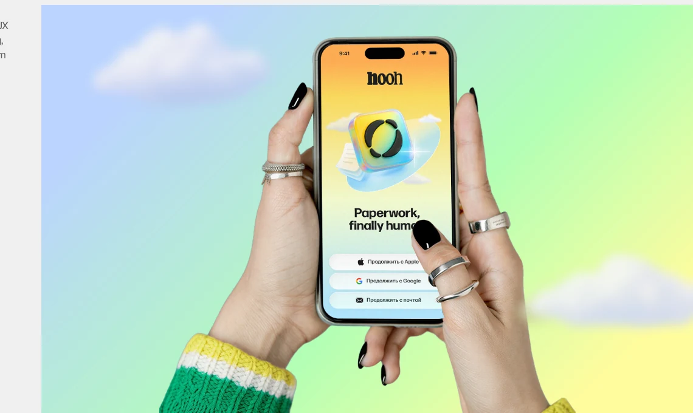
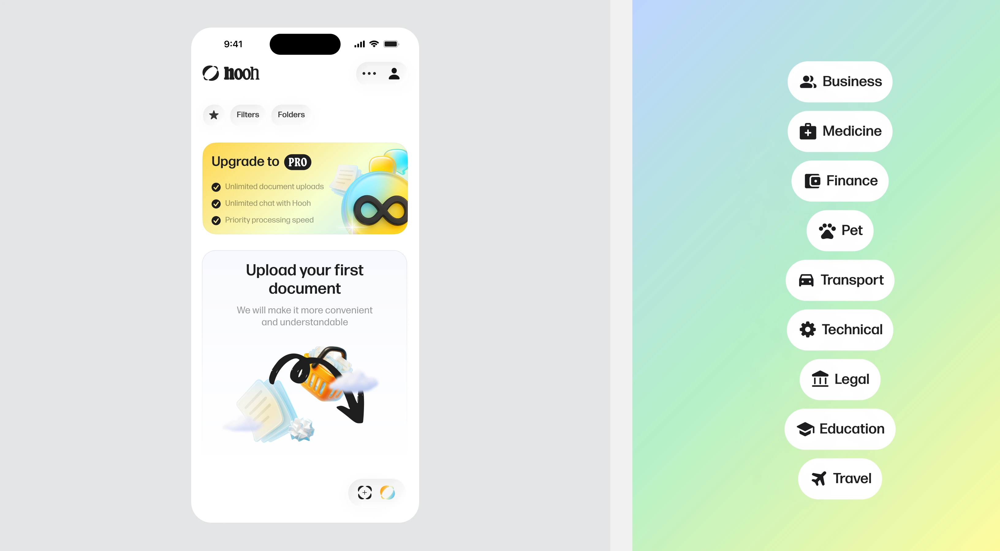

Hooh. An AI assistant translating complex bureaucracy into human language


Problem
People face document anxiety when dealing with contracts, reports, insurance papers, or legal texts. The problem is not just volume, but uncertainty: users don't know where to start, what matters most, or whether they are missing hidden risks, deadlines, or critical clauses. They need a lower-stress way to understand the essence of a document before deciding whether to go deeper
Task
Design an MVP for web and iOS that helps users understand complex documents faster, with less stress and less manual reading
Users
The product is designed for people without a legal background who regularly deal with complex paperwork — expats, digital nomads, and everyday users. They use Hooh to quickly decode lease agreements, Visa requirements, insurance papers, and banking contracts, and understand what matters without reading every page line by line
What we launched
We designed and launched the MVP across web and iOS, defining the core experience for document upload, layered reading, conversational exploration, and file organization
Design process
Started with competitor analysis — Genei, Notion AI, Microsoft Copilot for docs all gave full summary upfront, which removed user agency: you couldn't choose how deep to go. Early prototypes tried single-step summary, but internal testing showed users either felt over-summarised or wanted to dig further. This pushed us to layered reading.
Key UX decision: Progressive Disclosure
Single-step summary risks oversimplification; full document keeps overwhelm. Three layers let users self-calibrate depth: skim with snapshot, dive deeper if signal is meaningful, ask targeted questions if specific concern surfaces. Each layer is a commitment threshold — users don't pay attention cost until they've decided the document is worth it.



Designed a conversational experience for document exploration
The assistant uses uploaded documents as context, allowing users to ask follow-up questions, explore categories, and retrieve relevant information without manually scanning long text


Outcome
MVP shipped on web and iOS. Progressive Disclosure became the core pattern across every document-handling feature in the product. Internal validation with the target cohort (non-legal users) confirmed the direction — the pattern reduced document anxiety in qualitative sessions, and quick-snapshot proved to be the most-used entry point into a file. Public release metrics weren't part of this scope.